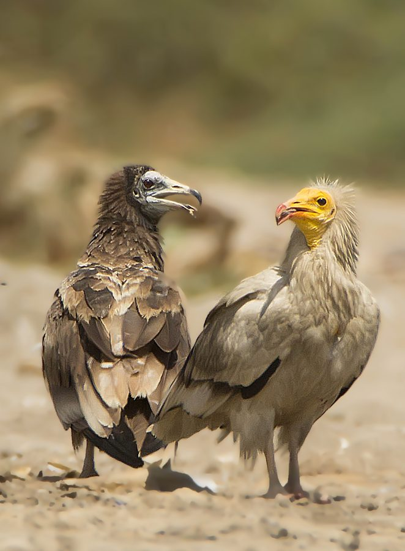

सफ़ेद गिद्धEgyptian Vulture
Neophron percnopterus · Accipitridae · BRD-0103

- Scientific name वैज्ञानिक नाम
- Neophron percnopterus (Linnaeus, 1758)
- Family कुल
- Accipitridae
- Hindi हिंदी
- सफ़ेद गिद्ध
- Local names स्थानीय नाम
- safed giddh, safed ged, white vulture
- Status here यहाँ की स्थिति
- native
- Movement आवागमन
- Resident, here all year
- IUCN IUCN
- EN
- Review समीक्षा
- audited and independently read
When to look कब देखें
Present all year. साल भर मौजूद।
Tell it apart from इनसे अलग पहचानें
सफ़ेद गिद्ध / Egyptian Vulture
Neophron percnopterus (Linnaeus, 1758) — Accipitridae
सफ़ेद गिद्ध — भारत का सबसे छोटा गिद्ध, सफ़ेद और काले पंखों वाला एक पक्षी जो खुली जमीन पर मरे हुए जानवरों को खोजता है। यह पूरे भारत में रहता है और शहरों के पास भी देखा जाता है। गाँवों में कचरा साफ करने वाला यह पक्षी पिछले तीस साल में बहुत कम हो गया है क्योंकि पशुओं की दवा डाइक्लोफेनाक़ गिद्धों को मार देती है। अब यह दुर्लभ हो गया है।
Quick Identification त्वरित पहचान
| Feature | Description |
|---|---|
| Size | Small vulture (58–66 cm total length); wingspan 150–170 cm; smallest of Indian vultures |
| Plumage | Predominantly white; black flight feathers (primaries and secondaries) visible in flight |
| Head and neck | Unfeathered, pale yellow skin; small cere and eye-rings bright yellow |
| Body | Thick white neck; overall stocky build |
| Tail | Black or dark grey, short and wedge-shaped |
| Legs and feet | Long, pale yellow legs; black claws |
| Bill | Long, pointed, pale yellowish; used to tear flesh and probe carcasses |
| Flight | Buoyant, distinctive "V"-shape in soaring flight; fast wing beats in active flight |
Field tip: In eastern UP, search for this small white vulture over open cultivated fields and grasslands during morning and afternoon hours. Often seen perched on bare branches of mango or neem trees overlooking open country. The pale, unfeathered head and long yellow legs are diagnostic even at distance.
Morphology आकारिकी
Biometrics (nominate subspecies percnopterus and Asian subspecies ginginianus, the form in eastern UP):
| Measurement | Range |
|---|---|
| Total length | 580–660 mm |
| Wingspan | 1500–1700 mm |
| Wing (flattened chord) | 410–480 mm |
| Tail | 190–230 mm |
| Tarsus | 52–62 mm |
| Bill (culmen from base) | 42–58 mm |
| Weight | 1.3–2.0 kg |
Plumage: Head and neck bare, with warty skin of pale yellow colour; ear-coverts feathered. Upper plumage white with some pale buffish tones. Flight feathers (primaries and secondaries) black or dark brown. Lesser and median coverts white. Back and rump white. Tail short, wedge-shaped, dark grey or blackish. Underparts white. Underwings white with contrasting black flight feathers.
Bare parts: Cere pale yellow; eye-ring golden-yellow. Eyes are pale yellow or straw-coloured. Legs and feet pale yellow to greenish-yellow.
Juveniles: Overall buffish-white; head and neck covered with sparse dark feathers; becomes more white as bird ages. Reaches adult plumage by third or fourth year.
Sexes: Similar; males slightly smaller than females.
Vocalisations
Egyptian Vultures are largely silent except at the nest.
- Hiss and grunts: At roosts and nests, produces harsh hisses and grunting calls, used in intra-pair communication and disturbance response.
- Silent flight: Primarily a silent soarer; does not produce distinctive calls during flight.
- Alarm: Sharp grunts and hisses if threatened.
Behaviour & Ecology व्यवहार और पारिस्थितिकी
Obligate scavenger: Egyptian Vulture is an obligate carrion feeder, depending entirely on carcasses of dead livestock and wild animals. Locates carcasses using vision; often follows larger vulture species to feeding sites.
Foraging behaviour: Often the first vulture species to arrive at a carcass and the last to leave, exploiting small fragments and marrow. Uses its long, slender bill to probe deep into carcasses and extract food from places inaccessible to larger vultures.
Soaring and movement: A skilled soarer that ascends on thermals to scan large areas of open country. Often travels long distances in search of food; recorded foraging flights of 50+ km from roosts.
Social structure: Largely solitary or in pairs; may congregate at abundant food sources. Roosts communally on cliffs or large trees.
Breeding: Monogamous; pairs remain together across years. Nests on cliffs, rocky outcrops, or tall trees; uses stick nest lined with grass and feathers.
Life Cycle / Phenology जीवन चक्र
- December–January: Courtship and nest preparation; pairs reoccupy previous nest sites or build new nests
- January–February: Egg-laying (usually 1–2 eggs); incubation begins
- February–March: Incubation continues (27–29 days); chicks hatch
- March–April: Nestling period (68–90 days); intensive feeding; parents make frequent foraging trips
- April–May: Fledging; juveniles leave nest but depend on parents for food for several weeks
- May–November: Dispersal and continuous foraging; year-round presence in suitable habitat
Host Plants or Prey आहार
Diet: Obligate carrion feeder, eating only dead flesh.
- Carcasses of livestock (cattle, buffalo, goat, sheep)
- Wild ungulate carcasses (deer, antelope if available)
- Small fragments and marrow from kills made by other predators
- Discarded meat and offal from butcheries (historical; declining with modern sanitation)
- Bone shards and leather in some cases
Predators / Natural Enemies शत्रु
- **** (Aquila chrysaetos) — preys on juveniles and young birds
- Jackals and wild dogs — may take eggs or chicks from nests
- Crows (Corvus spp.) — may mob or harass adults; depredate eggs
- Humans — direct persecution; habitat destruction
Agricultural / Human Relevance कृषि प्रासंगिकता
Waste disposal and disease control: By consuming livestock carcasses and offal, Egyptian Vultures historically provided significant ecosystem services, removing sources of disease and reducing pathogen transmission. This role is particularly important in areas without modern waste management.
Diclofenac and vulture decline: The catastrophic decline of Egyptian Vultures and other vulture species across India in the past three decades (1990s–2020s) is directly attributable to the use of the veterinary non-steroidal anti-inflammatory drug diclofenac in livestock. When vultures feed on carcasses of animals treated with diclofenac, they develop visceral gout and kidney damage, leading to death within days. Populations declined by >95% across Asia. The use of diclofenac in veterinary medicine was banned in India in 2006, but populations have recovered very slowly due to reservoir use and poisoning from other sources. The bird's continued rarity makes any local sighting significant.
Protected status: Schedule I of the Wildlife (Protection) Act, 1972 (India). This is the highest protection level, affording absolute legal protection. Capture or killing is prohibited. The species is legally protected throughout India, though enforcement remains challenging in some areas.
IUCN Endangered status: Classified as Endangered (EN) by the IUCN Red List due to population decline >90% over 30 years, driven by diclofenac poisoning. Recovery is ongoing but slow.
Expected Locally स्थानीय रूप से अपेक्षित
Not a field record. Written from published accounts for eastern Uttar Pradesh. No confirmed local sighting yet — if you have seen it, that is what the atlas needs.
अभी तक स्थानीय पुष्टि नहीं। यह विवरण प्रकाशित स्रोतों से है, किसी अवलोकन से नहीं।
Egyptian Vulture is expected as a resident (year-round) in open cultivated landscapes of Basti and Ayodhya districts, particularly in areas with rocky outcrops or large isolated trees suitable for nesting. However, the species is now rare across its former range in Uttar Pradesh. Historical records place it throughout the state; current occurrences are sparse. Search for it on early-morning thermals over open fields, grasslands, and abandoned settlements. Look for the distinctive small size, white plumage, and buoyant soaring flight. A first record for the atlas would be a photograph showing the pale, unfeathered yellow head and neck, white body plumage, and black flight feathers, with precise date and location.
Distribution वितरण
Global range: Mediterranean basin, North Africa, sub-Saharan Africa, Middle East, Central Asia, and the Indian subcontinent. Migratory in temperate regions; resident in tropical regions.
In India: Formerly widespread across open country of the entire mainland. Now patchily distributed, with concentrations in parts of peninsular India (Western Ghats, Deccan Plateau) and scattered populations in the northern plains.
In Uttar Pradesh: Historically widespread in open districts. Now sparse to absent in much of the state due to diclofenac poisoning and habitat loss. Remaining populations concentrated in areas with protected grasslands and cliffs.
In Basti district / eastern UP: Expected as a resident but now rare. Historical records suggest it was common; current status uncertain. The species should be looked for in open fields, grazing lands, and along river valleys, particularly the Ghaghra system.
Research Questions शोध प्रश्न
- Is the Egyptian Vulture still present in Basti and Ayodhya districts, and if so, where? / क्या सफ़ेद गिद्ध अभी भी बस्ती और अयोध्या में पाया जाता है? — Document any sightings with location, date, and photograph.
- What is the current population status compared to historical records? / पिछले दस साल में इस गिद्ध की संख्या में क्या बदलाव आया है? — Compile historical records from villages and compare with current surveys.
- Do livestock in the region still use diclofenac or other harmful NSAIDs? / क्या स्थानीय पशुपालक अभी भी डाइक्लोफेनाक का उपयोग करते हैं? — Interview farmers and veterinarians about drug use in livestock.
- Where are the nearest active nesting sites, and are any birds from Basti moving to them? / सबसे पास के घोंसले कहाँ हैं? — Trace movements if individuals are sighted.
- What alternative anti-inflammatory drugs are available to farmers, and what barriers prevent adoption? — Research and document safer alternatives without equipment.
Similar Species मिलती-जुलती प्रजातियाँ
| Species | How to tell apart | हिंदी | |
|---|---|---|---|
| White-rumped Vulture (Gyps bengalensis) — if present | Much larger (77–104 cm); darker plumage with dark flight feathers; whitish rump; longer neck | बड़ा गिद्ध — बहुत बड़ा, पीठ सफ़ेद | |
| Griffon Vulture (Gyps fulvus) — if range overlaps | Very large (94–110 cm); overall tawny-buff; naked head paler; appears tan in flight | गिद्ध — बहुत बड़ा, सुनहरा भूरा | |
| Oriental [[white_stork\ | White Stork]] (Ciconia boyciana) — white vagrant | Large stork (110–125 cm); black and white pattern different; long red bill and legs; walks on ground | सारस — लंबी लाल टाँगें, पानी में |
Field rule: Small vulture (smallest of all vultures in India) + predominantly white plumage + contrasting black flight feathers + pale bare yellow head and neck + buoyant soaring = Egyptian Vulture. No other small white raptor should be confused with it.
Taxonomy & Classification वर्गीकरण
Original description. Carl Linnaeus described this species as Vultur percnopterus in 1758 in Systema Naturae, 10th edition. The type locality is stated as "Aegyptus" (Egypt), from which the vernacular English name derives.
Subspecies. Two subspecies recognized: N. p. percnopterus (Mediterranean and North African populations) and N. p. ginginianus Latham, 1790 (Asian form, occurring in India and the subspecies in eastern UP). The Asian form differs in size and plumage tone.
Family and order placement. Order Accipitriformes (formerly placed in Falconiformes); family Accipitridae (hawks, eagles, and vultures). Neophron is the only genus in its lineage and is basal within Accipitridae.
Phylogenetic notes. Molecular studies place Neophron as a sister group to Asian vultures (Gyps and related genera), not closely related to other small raptors.
IUCN status rationale. Classified as Endangered (EN) due to population decline exceeding 90% over three generations (30 years), driven primarily by diclofenac poisoning of livestock. The species' dependence on carrion of domesticated animals makes it vulnerable to poisoning campaigns and veterinary drug use. Recovery is dependent on diclofenac avoidance and habitat protection.
Photo Gallery फोटो गैलरी
No photos yet — add field photos to media/species/egyptian_vulture/ and run node scripts/sync_photos.js.
Photos needed आवश्यक फोटो
- [ ] Adult in flight showing white body and black flight feathers (सफ़ेद और काले पंख)
- [ ] Perched bird showing pale bare head and neck (सफ़ेद सिर)
- [ ] Close-up of head showing yellow bare skin and eye-ring (पीली त्वचा)
- [ ] On thermal showing soaring posture
- [ ] At carcass feeding (if safe to photograph)
References संदर्भ
- Linnaeus, C. (1758). Systema Naturae. 10th ed. Vol. 1, p. 87. Salvius, Stockholm.
- Ali, S. & Ripley, S.D. (1987). Handbook of the Birds of India and Pakistan. Vol. 1. Oxford University Press, New Delhi.
- Grimmett, R., Inskipp, C. & Inskipp, T. (2011). Birds of the Indian Subcontinent. 2nd ed. Christopher Helm, London.
- Rasmussen, P.C. & Anderton, J.C. (2005). Birds of South Asia: The Ripley Guide. Smithsonian Institution, Washington DC.
- Prakash, V., Pain, D.J., Cunningham, A.A., Donald, P.F., Prakash, N., Verma, A., Gargi, C., Safford, R. & Ranade, S. (2007). Rapid population decline in Asian vultures — a potential role of NSAIDs. Journal of Applied Ecology, 44(2), 352–360.
- BirdLife International (2024). Neophron percnopterus. IUCN Red List of Threatened Species. Ver. 2024. [Assessor: BirdLife International for the IUCN SSC]
- GBIF Occurrence Data — Neophron percnopterus, Uttar Pradesh (2010–2025).
Source file: species/fauna/birds/egyptian_vulture.md